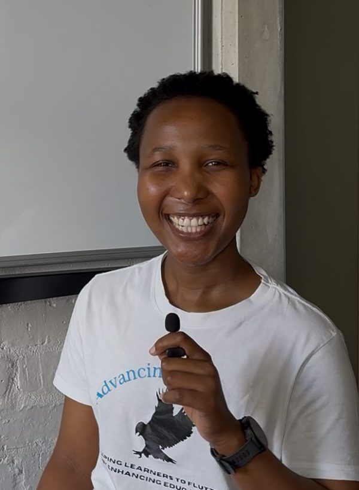
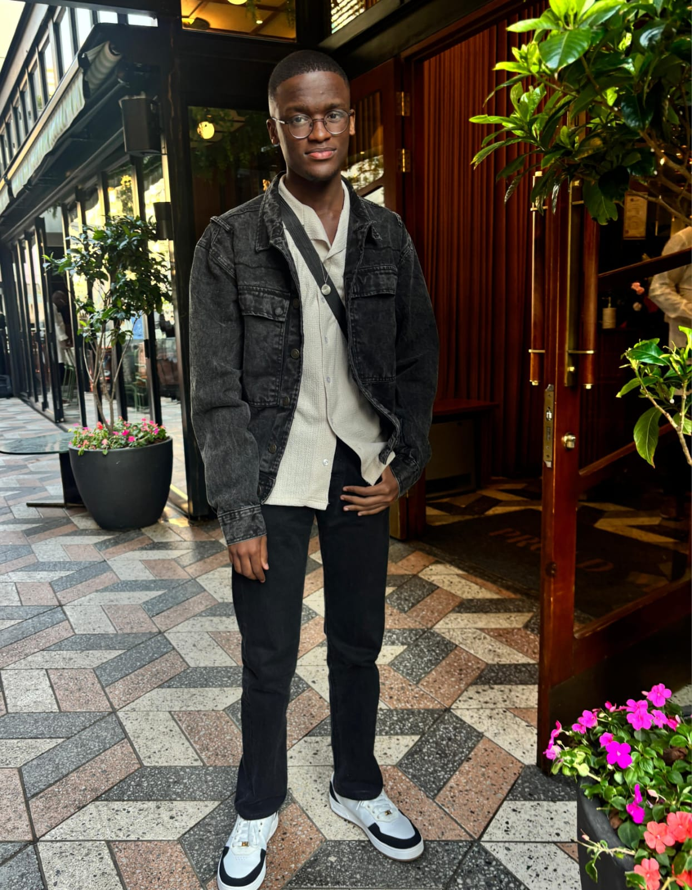
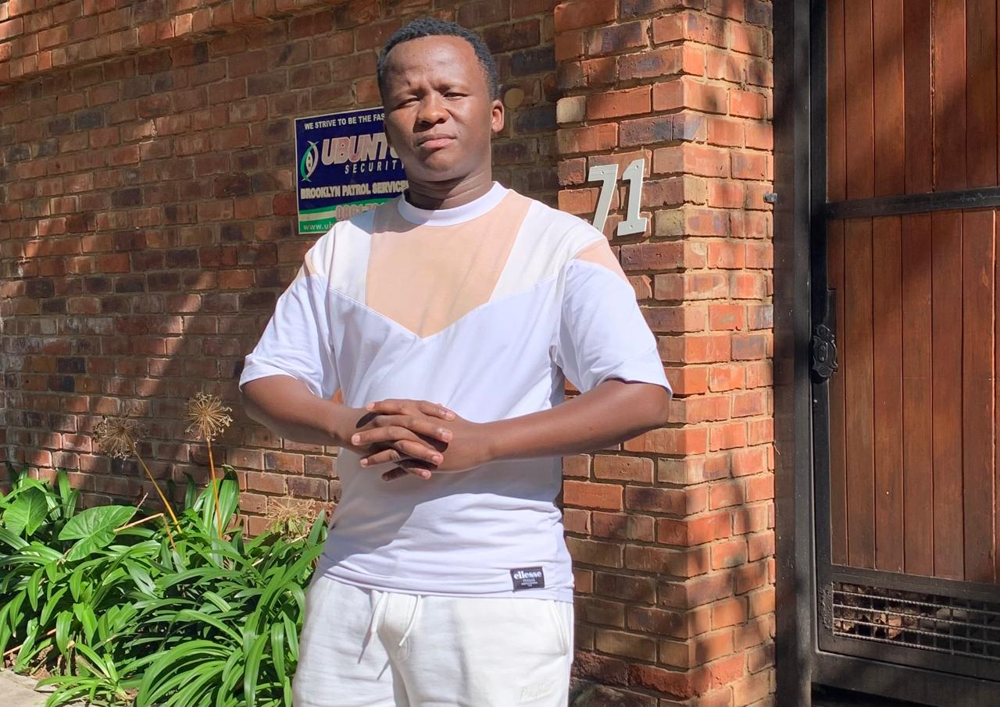
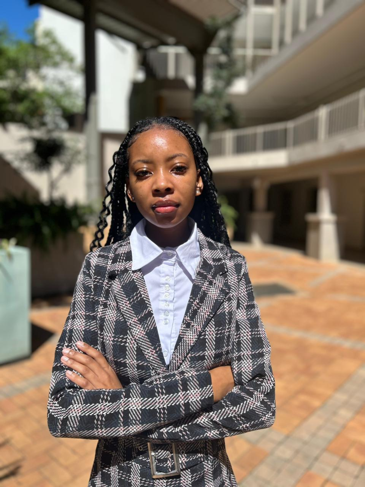

StudiM8 was established in 2020, born from a desire to support learners who needed clarity, confidence, and strong academic guidance. In the beginning, we offered extra Mathematics, Science, and Accounting classes to help students strengthen their understanding of key subjects. As we grew, we realised something important: every learner progresses differently, and personalised attention makes a real difference. This understanding led to the evolution of StudiM8 in 2023, from group extra classes to a more tailored approach focused on one-on-one sessions, targeted support, and structured guidance. Today, StudiM8 is built on the belief that every learner has potential waiting to be unlocked. With customised lessons, clear explanations, and dedicated mentorship, we continue to help students improve, stay motivated, and build the confidence they need to succeed.
Our vision at StudiM8 is to provide accessible, high-quality tutoring to learners across the country. We aim to deliver personalised lessons that empower students to improve academically, build confidence, and develop a strong work ethic — regardless of their location. By expanding our services nationwide, we strive to become a trusted study partner for learners and families, helping students realise their full potential and achieve lasting academic success.
StudiM8 Tutoring is dedicated to making learning simple, clear, and effective. Our team of passionate tutors is committed to helping students build confidence and master their subjects through supportive, step-by-step guidance.

Second-year Actuarial Sciences student at the University of Pretoria. I tutor Mathematics, Statistics, and Life Sciences, making complex topics simple and clear. My organized and supportive approach helps students gain confidence and truly understand the material.
Subjects Tutoring:
BSc student at the University of Pretoria, passionate about helping students master Mathematics and Natural Science. I break down tough topics into easy steps, using patience and real-world examples to make learning engaging and effective.
Subjects Tutoring:
Third-year BCom Financial Management Science student at the University of Pretoria. I love making a positive impact through education. As an experienced Mathematics tutor, I simplify complex ideas and help students achieve academic success.
Subjects Tutoring: